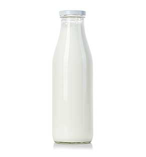
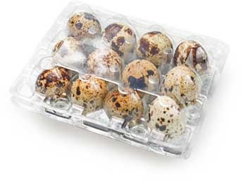
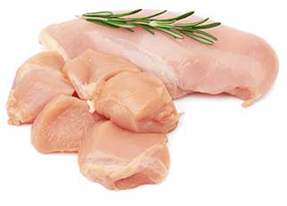
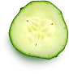
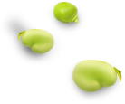
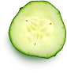
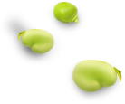

Органика — это целостная система производства по-настоящему чистой, натуральной и полезной продукции
Молочные продукты
В наши дни появилась мода на здоровое питание, поэтому на рынке питания разработали органическое молоко. Органическое молоко является продуктом органического животноводства
В наши дни появилась мода на здоровое питание, поэтому на рынке питания разработали органическое молоко. Органическое молоко является продуктом органического животноводства
В наши дни появилась мода на здоровое питание, поэтому на рынке питания разработали органическое молоко. Органическое молоко является продуктом органического животноводства
В наши дни появилась мода на здоровое питание, поэтому на рынке питания разработали органическое молоко. Органическое молоко является продуктом органического животноводства
Мы полностью контролируем весь цикл производства – от поля до прилавка за счет собственной серьезной материальной и научной базы. Наш подход направлен на высокие технологии и достижения научного прогресса
Здоровье
Традиции
Вкус
Наши новинки
Будь в тренде с современым миром, и будь здоров вместе с нами

Молоко топленое
Молоко Healthy food топленеое мдж 4% 500гр
159 руб/шт

Яйцо перепелиное
QEGG Яйцо перепелиное 20шт
94 руб/упак

Куриное филе Оссобуко
Куриное филе Оссобуко (Ангус) охл скин. В вакумной уапаковке


  
 